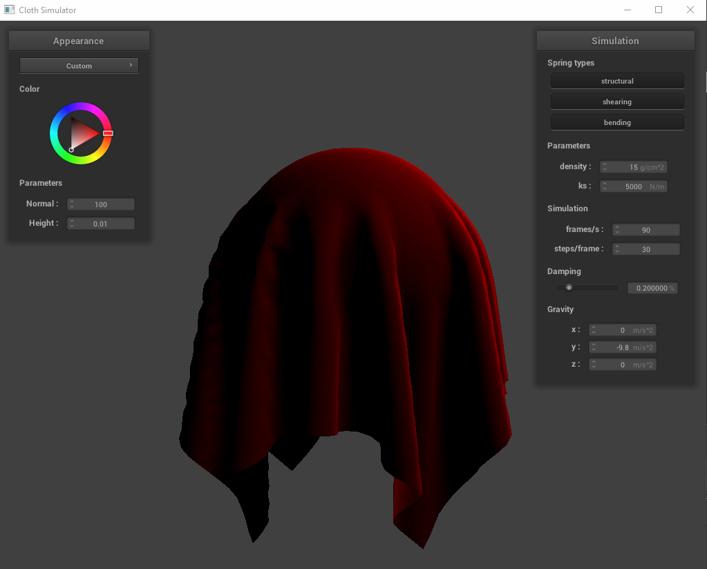
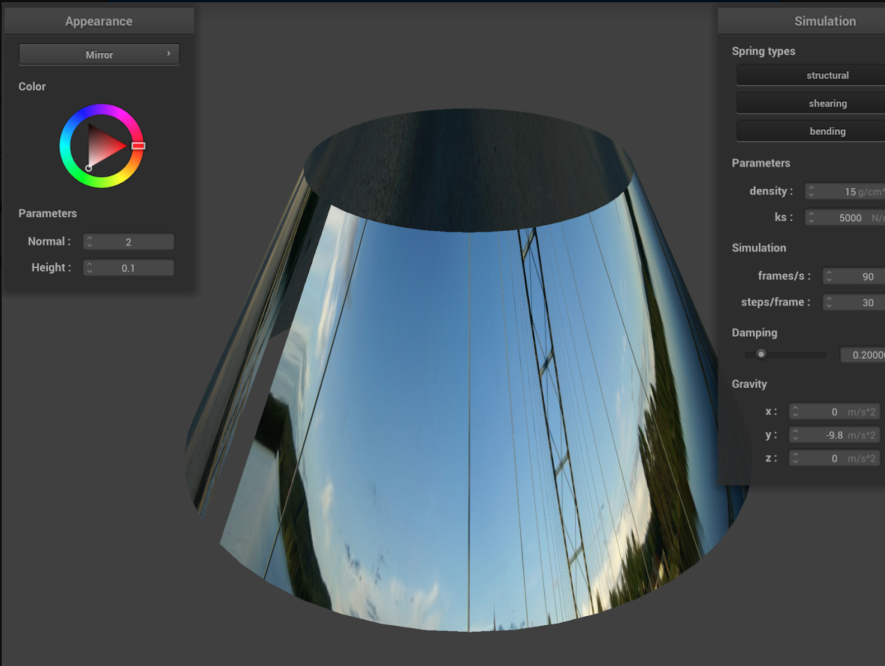
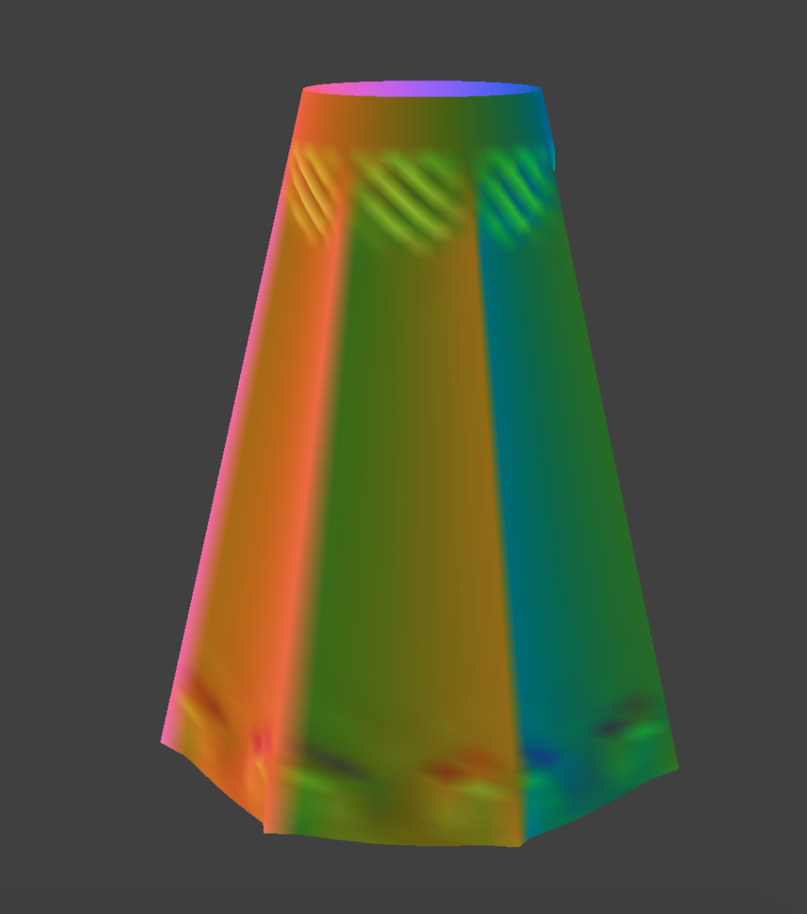
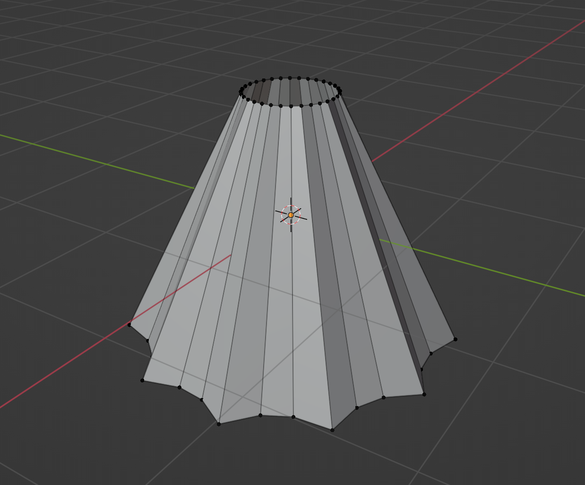
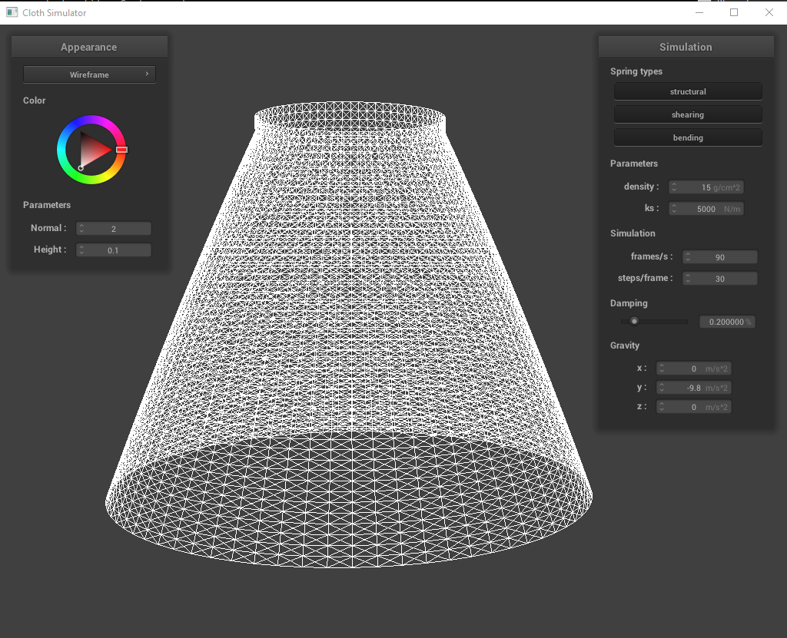
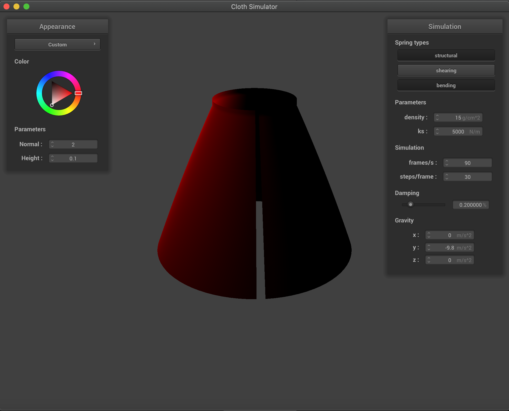
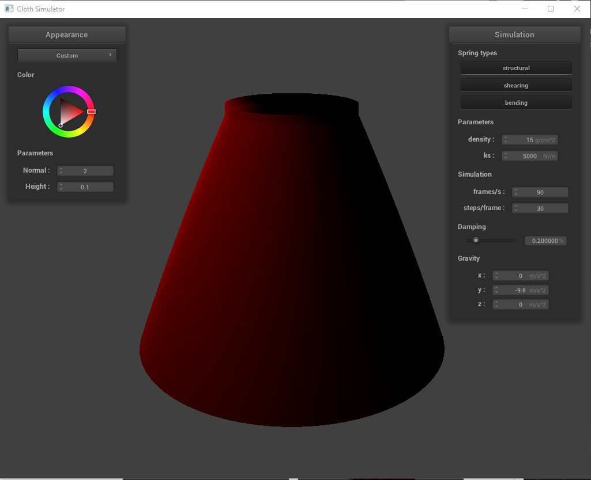
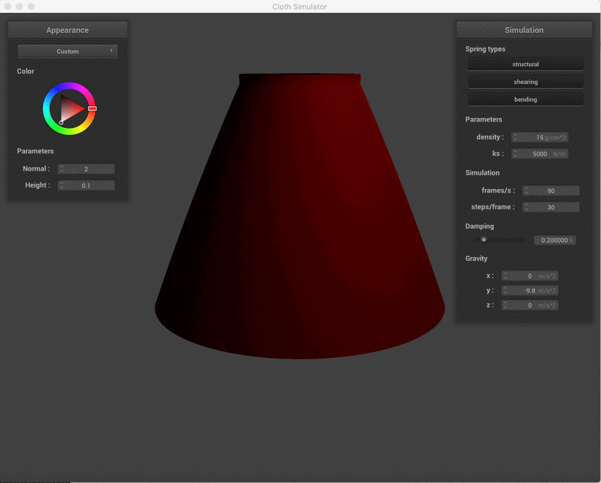
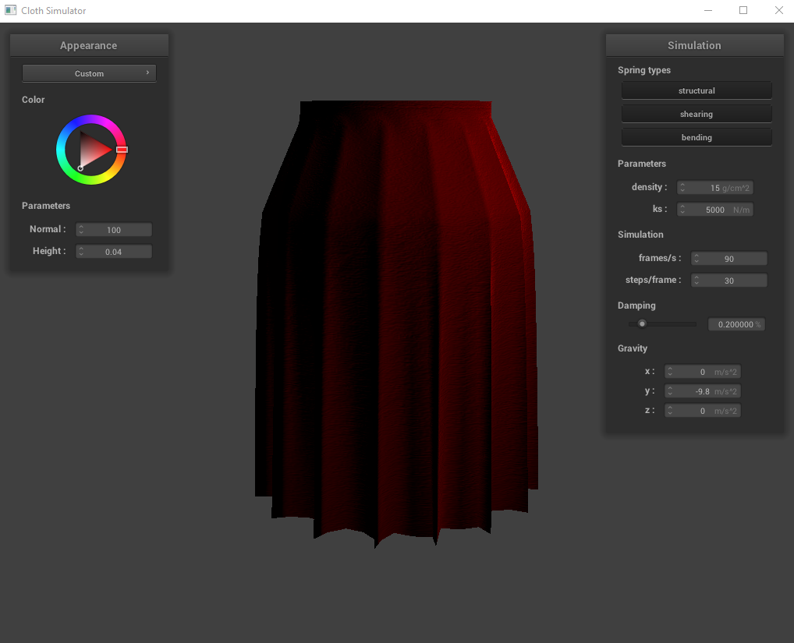
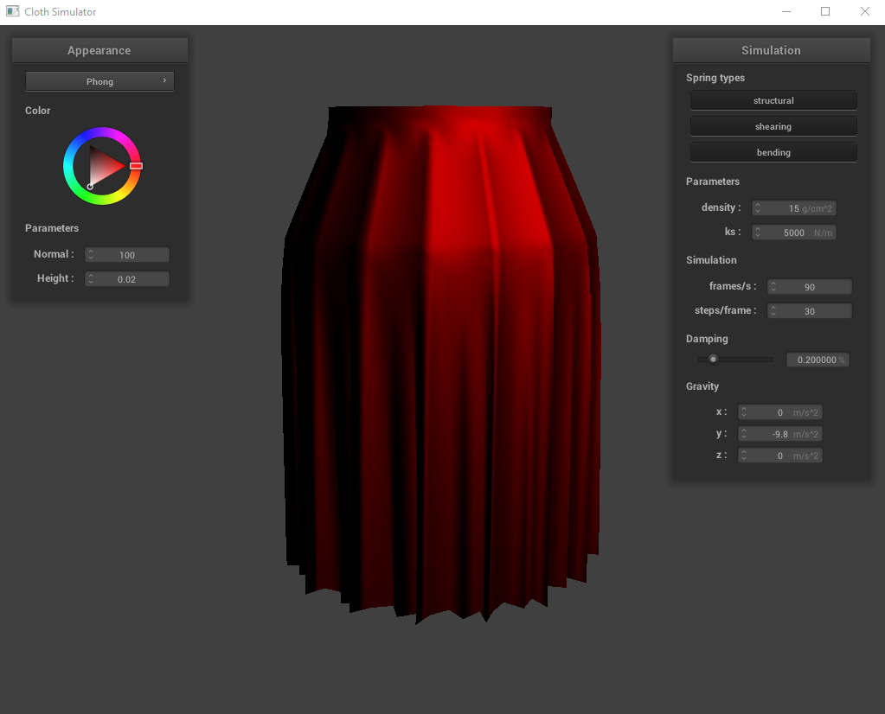

CS184 Final Project: Rendering Velvet Skirts
Team: Jessica Dong, Kelly Li, Kaiona Martinson, Jennifer Yang
Abstract
The clothing industry produces 10% of the world’s global carbon emissions. Additionally, each season, clothes are
overproduced by 30 to 40%. We wanted to take a stab at rendering clothing since modeling clothing with graphics
can help reduce waste when designing clothing, mocking up prototypes without directly using expensive fabric,
and online shopping. We decided to render a velvet skirt because velvet has a lot of interesting properties.
Specifically, the color of velvet can change depending on the direction of the fibers or the perspective you’re
looking at it from.
Technical Approach
The references for both the velvet and skirt were mainly used as starting points for our project, with the velvet
features in the project mostly being done by eye.
Velvet
- For the velvet, we referenced Google’s github site for the Filament project, which helped us determine
the base color (ambient coefficient) to be black, as well as the relation between the diffuse color
and sheen color (specular).
- We modified the existing blinn-phong coefficients to render a more realistic velvet. We changed the
diffuse coefficient to a red color to make our base cloth red, the ambient coefficient to a black
color to make the shadows darker, and the specular coefficient to a brighter red (instead of white)
to make the fabric look less like latex / metal.
- We also increased the spring constant and density of the fabric in the clothSim gui to make our
fabric heavier, as well as adding bump mapping with an image of a red velvet from Google.
- We referenced a KeyShot article that described different features of velvet like sheen, roughness,
backscatter, and edginess to ballpark the variable values that would make our velvet look more
realistic.

Velvet on ball
Skirt
- For the skirt, we referenced the paper, A 3D Design System of Skirt Profile Based on OpenGL, that got
us started on the basic skirt shape. We made a series of circles of varying radius size and height.
We started with a circle with radius size = width / 4 and height = height. We incremented the radius
size and decremented height by an offset to get num_height_points circles, where the bottom circle
has a radius size = width and height = 0. For each circle, we had num_width_points number of point
masses, each with position (radius size * cos(Θ), height, radius size * sin(Θ)), where Θ ranged from
0 to 2π. We got the equations from the paper.
- We then connected the point masses with springs like in project 4: structural constraint between a
point mass and the point mass to its left and above it, shearing constraints between a point mass
and the point mass to its diagonal upper left and its diagonal upper right, and bending constraints
between a point mass and the point mass two to its left and two above it.

Preliminary skirt with mirror shading
- For all the circles, we pinned every fifth point mass to create a pleat effect that was visible once
we started the simulation and accounted for the effect of gravity on the skirt. We did the pleat
effect by eye.

Adding hem and pins to the skirt
- After combining our custom .frag velvet fragment and skirt grid, we added a couple of modifications
to make the overall skirt shape more realistic (more “hip” since we added a hip :D). To make the skirt
less conic after the simulation starts, we included a variable named taper to decrease how much the
radius increases by as we go down the skirt. We also included a variable that controls when the
pleated pins stop (around 30% down from the waistband), thus allowing the rest of the fabric to drape
down naturally with gravitational force. This made the skirt look less tent-like and more curved.
Problems Encountered
- We initially drafted up a skirt in Blender but had issues with importing the model into our code. We then
decided to render the skirt using point masses and springs like in project 4.

Skirt in Blender
- We encountered an issue where there was an apparent side seam missing from the skirt. Though our wireframe
was correct, the original clothsim expected the cloth to be rectangular in shape, thus the code for creating
the clothmesh which allows for the rendering of fabric color did not allow for a conically-shaped piece of
fabric. To fix this, we altered the buildClothMesh function in cloth.cpp to check when the pointmass was the
last pointmass in its row, in which we would create triangles that connect back to the first pointmasses in
the row. This ended up fixing the gap.

Conic wireframe with no gaps

Before seam fix

After seam fix
Lessons Learned
- This was our first time using Blender, so that definitely came with a learning curve full of watching video
tutorials and playing around with the software.
- Since we only had experience with making flat rectangular grids from the clothsim project, making the conic
shape was a valuable learning experience.
- Velvet has some cool anisotropic features that can be approximated by eye. We did a lot of eye-balling to get
realistic-looking fabric.
Results

Final velvet skirt in motion

Final velvet skirt at resting state with bump mapping

Satin skirt
References
Guy, Romain, and Mathias Agopian. Filament Materials Guide,
https://google.github.io/filament/Materials.html#materialmodels/litmodel/anisotropy.
Velvet Keyshot Manual, 12 Mar. 2021,
https://manual.keyshot.com/manual/materials/material-types/advanced-material/velvet/
Xu, Jun, and Xiaobo Wang. A 3D Design System of Skirt Profile Based on OpenGL.
https://www.researchgate.net/publication/344563718_A_3D_Design_System_of_Skirt_Profile_Based_on_OpenGL.
Contributions from each team member
- We worked in pairs, and the project was mainly split into the velvet fabric and the skirt.
- Kelly and Jennifer:
- Pair-programmed together via zoom
- Rendered velvet fabric and satin fabric
- Added skirt tapering and control of length of pinned pleats for more natural skirt look
- Fixed open seam issue
- Kaiona and Jessica:
- Worked together and gave each other updates on progress
- Rendered skirt shape in Blender
- Modified buildGrid in cloth.cpp to render skirt shape